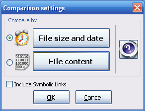

FreeFileSync offers three advanced options to configure processing of Symbolic Links (also called Symlinks or Soft Links). They can be configured directly within a *.ffs_gui/ffs_batch file via a text editor. Only the first option is presented on GUI:
<IncludeSymlinks> false </IncludeSymlinks>
<TraverseDirectorySymlinks>true </TraverseDirectorySymlinks>
<CopyFileSymlinks> false </CopyFileSymlinks>
Enable
"Include Symbolic Links" in order to process
Symbolic Links at all, i.e. add them to the file and directory
listing.
"Traverse
Directory Links" specifies handling of Symbolic Links to
directories:
If this option is enabled, they are traversed like
ordinary directories during comparison. When synchronizing, the
target of the Symbolic Link will be copied. If disabled, Symbolic
Links are not traversed. During synchronization, copying them
results in a copy of the Symbolic Link.
"Copy
File Links" defines the behavior for copying Symbolic Links
pointing to files:
If checked, the Symbolic Link itself will be
copied. If unchecked, the target of the Link will be copied instead.
On GUI only the first option is available for configuration, while "Traverse Directory Links" is implicitly enabled and "Copy File Links" disabled.

Note: In
the Windows build the options described above always apply to
"Reparse Points".
Reparse Points are a more general concept including for example
Symbolic Links, Junctions and Mount Points. The term "Symbolic
Link" has
been retained nevertheless for harmonization with Linux. Creating
or copying Symbolic Links requires the application to be started
with Administrator rights.